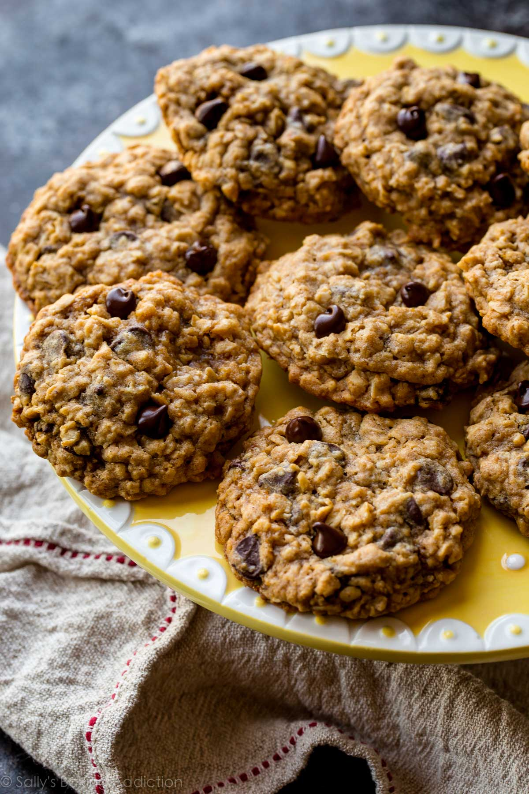

Oatmeal Chocolate Chip Cookies

Description
These chewy oatmeal chocolate chip cookies are the pinnacle of perfection! If you want
a big, FAT, soft, and chewy cookie like the kind you see at bakeries and
specialty shops, then this is the recipe for you!
Ingredients
- 1 1/2 cups packed light brown sugar
- 1/2 cup white sugar
- 1 cup unsalted butter, softened
- 2 eggs
- 2 tsp vanilla extract
- 1 1/4 cups all-purpose flour
- 1/2 tsp baking soda
- 1 tsp salt
- 3 cups instant oats
- 1 cup semi-sweet chocolate chips
Steps
- Preheat the oven to 325 degrees F (165 degrees C).
- Combine flour, baking soda, and salt in a medium bowl. Set aside.
- Cream together butter, brown sugar, and white sugar in a large bowl
until smooth. Beat in eggs one at a time, until well combined; stir
in vanilla extract.
- Stir flour mixture into egg mixture until just blended. Mix in quick
oats, walnuts, and chocolate chips. Drop batter by heaping spoonfuls
onto ungreased baking sheets.
- Bake in the preheated oven for 12 minutes. Allow cookies to cool on
baking sheet for 5 minutes before transferring to a wire rack to
cool completely.
*link to the original recipe,
pls don't get mad at me :3 this is just for learning purposes